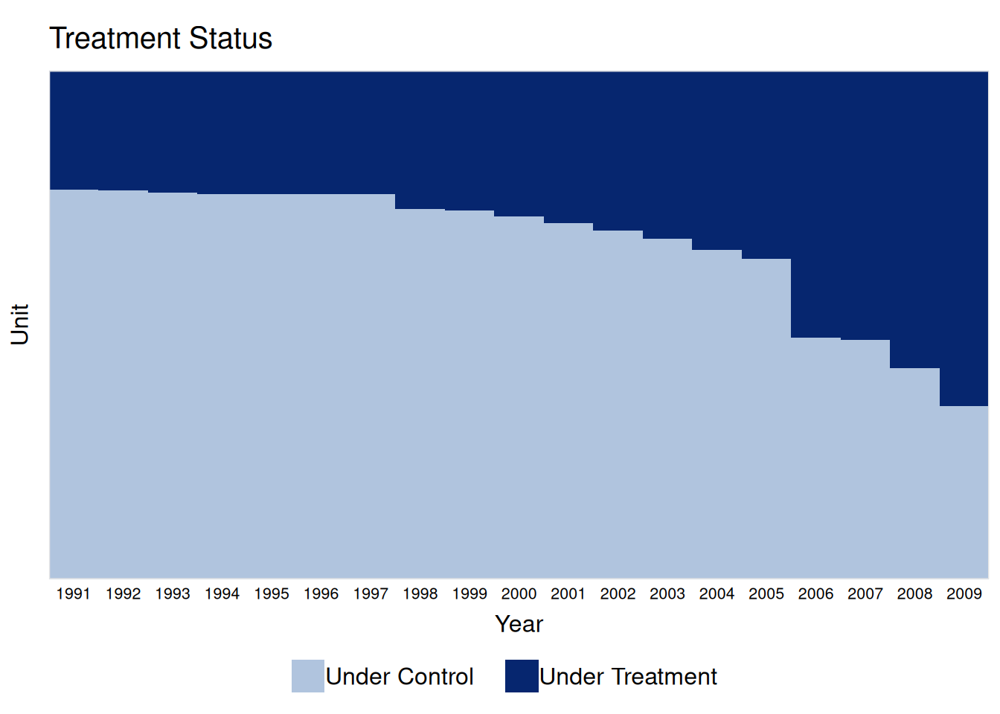
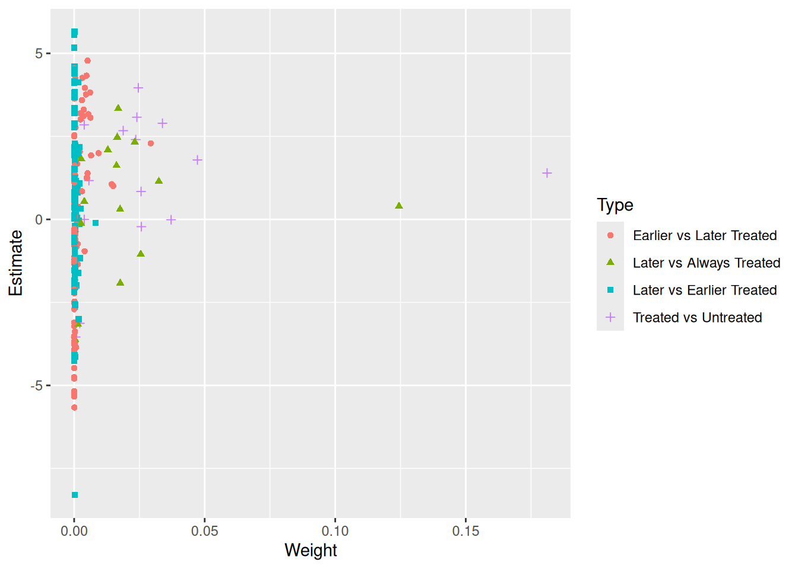
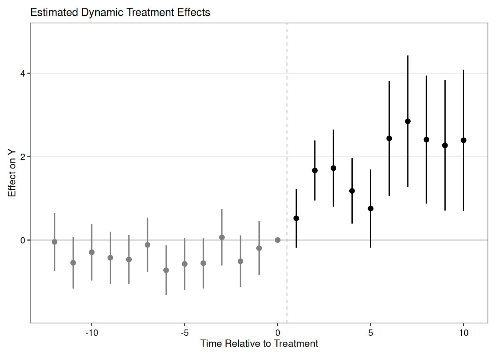
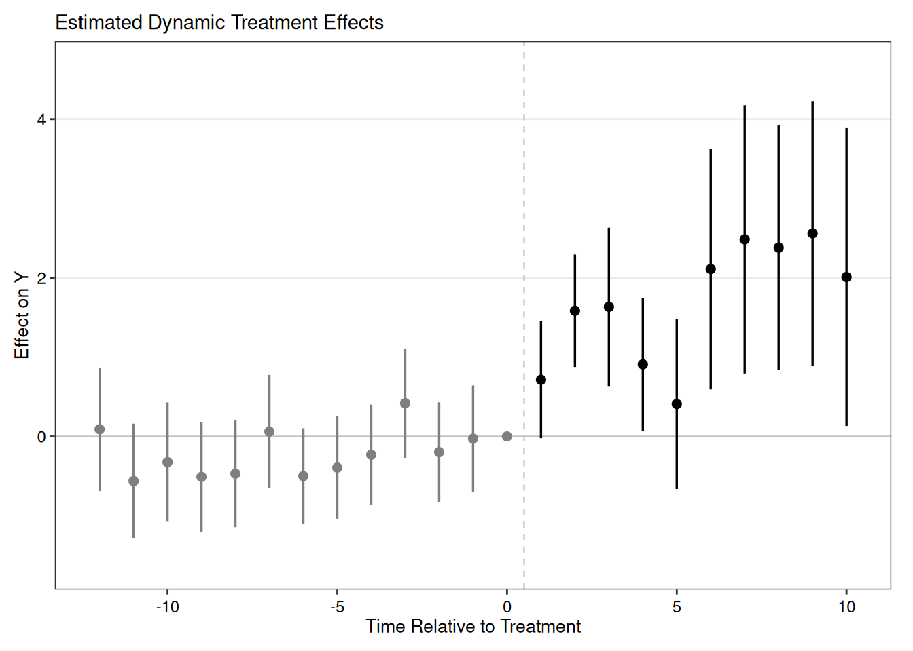
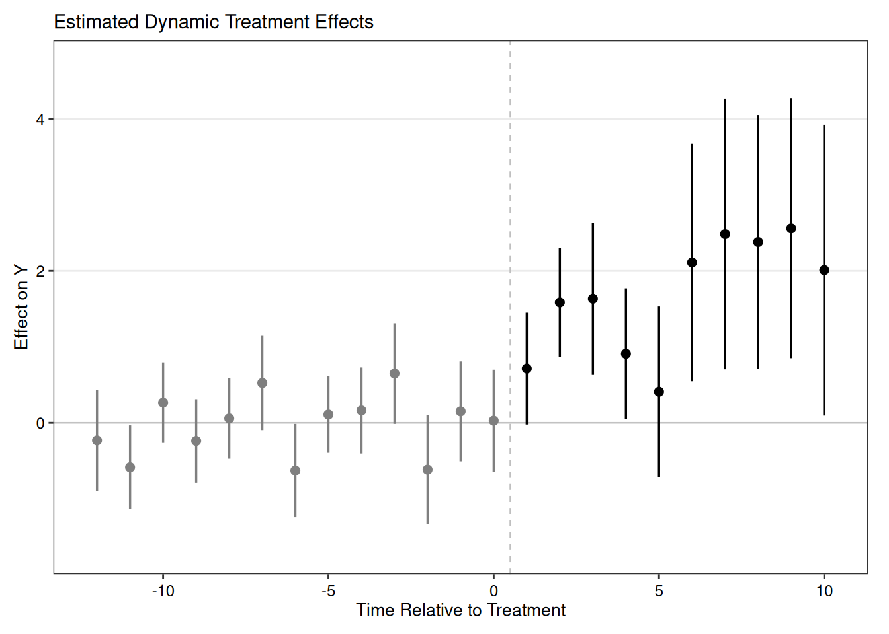
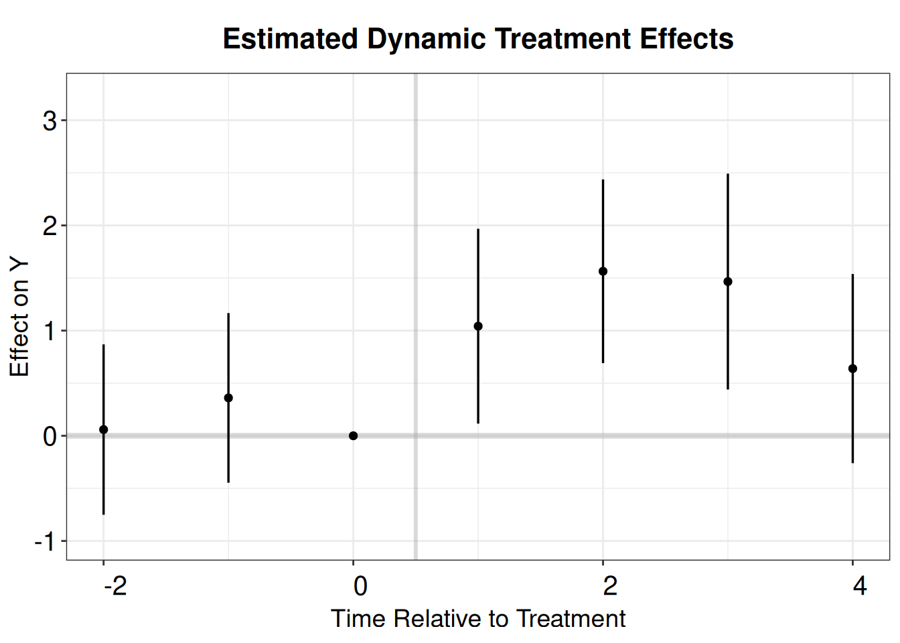
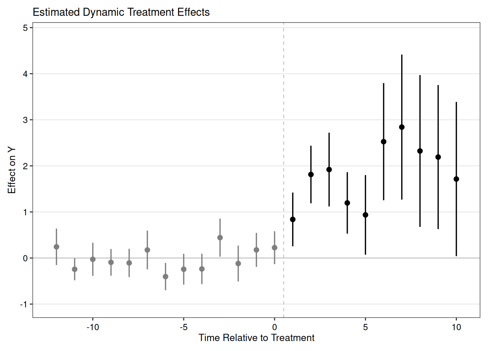
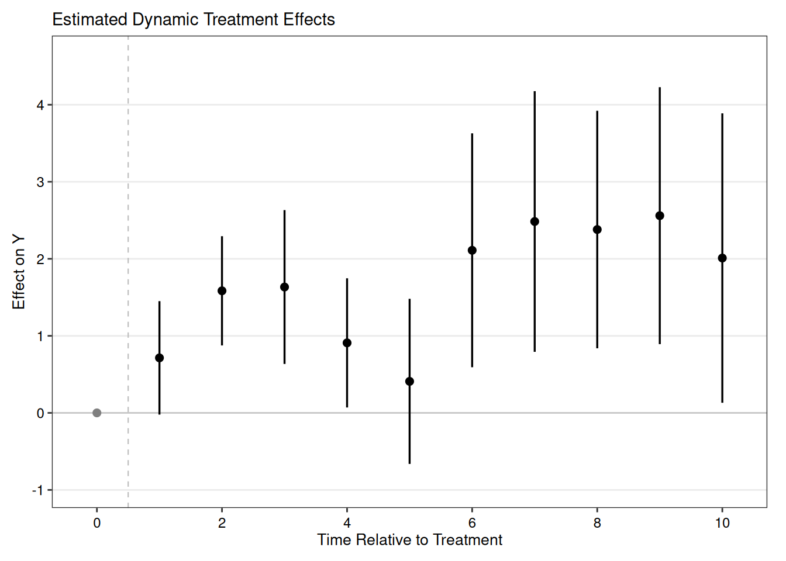

# A tibble: 22,971 × 4
bfs year nat_rate_ord indirect
<dbl> <dbl> <dbl> <dbl>
1 1 1991 0 0
2 1 1992 0 0
3 1 1993 0 0
4 1 1994 3.45 0
5 1 1995 0 0
6 1 1996 0 0
7 1 1997 0 0
8 1 1998 0 0
9 1 1999 0 0
10 1 2000 0 0
# ℹ 22,961 more rows21 Extended TWFE and other DiD estimators
21.1 Staggered DiD without treatment reversal
This blog is adopted from the tutorial of paneltools package. https://yiqingxu.org/tutorials/panel.html#Installing_Packages
I added Wooldridge’s ETWFE, which is my favorite estimator with staggered DiD. It is easy to understand and implement. It also works with nonlinear model such as logit and poisson.
This data is from Hainmueller and Hopkins (2019), in which the authors investigate the effects of indirect democracy (versus direct democracy) on naturalization rates in Switzerland using municipality-year level panel data from 1991 to 2009. The study shows that a switch from direct to indirect democracy increased naturalization rates by an average of 1.22 percentage points (Model 1 of Table 1 in the paper).

21.1.1 TWFE
First we do a TWFE model on it.
OLS estimation, Dep. Var.: nat_rate_ord
Observations: 22,971
Fixed-effects: bfs: 1,209, year: 19
Standard-errors: Clustered (bfs)
Estimate Std. Error t value Pr(>|t|)
indirect 1.33932 0.186525 7.18039 1.2117e-12 ***
---
Signif. codes: 0 '***' 0.001 '**' 0.01 '*' 0.05 '.' 0.1 ' ' 1
RMSE: 4.09541 Adj. R2: 0.152719
Within R2: 0.005173TWFE has issues when there is staggered adoption and heterogeneous treatment effects.
Goodman-Bacon (2021) demonstrates that the two-way fixed-effects (TWFE) estimator in a staggered adoption setting can be represented as a weighted average of all possible 2x2 difference-in-differences (DID) estimates between different cohorts. However, when treatment effects change over time heterogeneously across cohorts, the “forbidden” comparisons that use post-treatment data from early adopters as controls for late adopters may introduce bias in the TWFE estimator. We employ the procedure outlined in Goodman-Bacon (2021) and decompose the TWFE estimate using the command bacon in the bacondecomp package.
“Negative weights” can be the other issue. Basically it is a weighted average of comparison between different cohorts. The weights can be negative in a TWFE model.
type weight avg_est
1 Earlier vs Later Treated 0.17605 1.97771
2 Later vs Always Treated 0.31446 0.75233
3 Later vs Earlier Treated 0.05170 0.32310
4 Treated vs Untreated 0.45779 1.61180coef_bacon <- sum(df_bacon$estimate * df_bacon$weight)
coef_bacon[1] 1.339325
The problem shown in Bacon decomposition here is the comparison between “Later” and “Earlier Treated”. It’s a “forbidden” comparison.
TWFE with event history type of graph.
df.use <- hh2019 |>
na.omit()
df <- as.data.frame(
hh2019 |>
group_by(bfs) |>
mutate(treatment_mean = mean(indirect,na.rm = TRUE))
)
df.use <- df[which(df$treatment_mean<1),]
df.twfe <- as_tibble(get.cohort(df.use,D="indirect",index=c("bfs","year"),start0 = TRUE))
# time_to_treatment is NA when the unit is always treated, or never treated. It needs to be set to an arbitrary value for the twfe model.
df.twfe$treat <- as.numeric(df.twfe$treatment_mean>0) # drop always treated units
df.twfe[which(is.na(df.twfe$Time_to_Treatment)),'Time_to_Treatment'] <- 0 # can be an arbitrary value
twfe.est <- feols(nat_rate_ord ~ i(Time_to_Treatment, treat, ref = -1)| bfs + year,
data = df.twfe, cluster = "bfs")
summary(twfe.est)OLS estimation, Dep. Var.: nat_rate_ord
Observations: 17,594
Fixed-effects: bfs: 926, year: 19
Standard-errors: Clustered (bfs)
Estimate Std. Error t value Pr(>|t|)
Time_to_Treatment::-18:treat -0.320651 0.632702 -0.506796 6.1242e-01
Time_to_Treatment::-17:treat -0.118540 0.391148 -0.303058 7.6191e-01
Time_to_Treatment::-16:treat -0.395632 0.402921 -0.981910 3.2640e-01
Time_to_Treatment::-15:treat -0.410976 0.343899 -1.195048 2.3237e-01
Time_to_Treatment::-14:treat 0.244512 0.369127 0.662406 5.0788e-01
Time_to_Treatment::-13:treat -0.044310 0.354017 -0.125164 9.0042e-01
Time_to_Treatment::-12:treat -0.545891 0.315172 -1.732042 8.3600e-02 .
Time_to_Treatment::-11:treat -0.293138 0.346835 -0.845180 3.9823e-01
Time_to_Treatment::-10:treat -0.423981 0.319375 -1.327534 1.8466e-01
Time_to_Treatment::-9:treat -0.467114 0.301017 -1.551784 1.2106e-01
Time_to_Treatment::-8:treat -0.115633 0.333659 -0.346561 7.2900e-01
Time_to_Treatment::-7:treat -0.724290 0.305727 -2.369075 1.8037e-02 *
Time_to_Treatment::-6:treat -0.572950 0.317153 -1.806540 7.1159e-02 .
Time_to_Treatment::-5:treat -0.554993 0.309246 -1.794667 7.3033e-02 .
Time_to_Treatment::-4:treat 0.066209 0.345103 0.191853 8.4790e-01
Time_to_Treatment::-3:treat -0.509530 0.316296 -1.610929 1.0754e-01
Time_to_Treatment::-2:treat -0.195091 0.330220 -0.590793 5.5480e-01
Time_to_Treatment::0:treat 0.522715 0.359646 1.453415 1.4645e-01
Time_to_Treatment::1:treat 1.668834 0.367919 4.535879 6.4907e-06 ***
Time_to_Treatment::2:treat 1.724230 0.471363 3.657968 2.6858e-04 ***
Time_to_Treatment::3:treat 1.178336 0.400559 2.941732 3.3452e-03 **
Time_to_Treatment::4:treat 0.756323 0.478697 1.579962 1.1446e-01
Time_to_Treatment::5:treat 2.438229 0.705451 3.456269 5.7263e-04 ***
Time_to_Treatment::6:treat 2.848590 0.805315 3.537238 4.2442e-04 ***
Time_to_Treatment::7:treat 2.409359 0.783716 3.074275 2.1721e-03 **
Time_to_Treatment::8:treat 2.270428 0.797869 2.845617 4.5305e-03 **
Time_to_Treatment::9:treat 2.392678 0.863222 2.771799 5.6867e-03 **
Time_to_Treatment::10:treat 2.002836 0.953654 2.100170 3.5984e-02 *
Time_to_Treatment::11:treat 0.842590 0.560248 1.503961 1.3293e-01
Time_to_Treatment::12:treat 3.831918 2.300422 1.665745 9.6103e-02 .
Time_to_Treatment::13:treat 4.436437 2.322318 1.910349 5.6397e-02 .
Time_to_Treatment::14:treat 4.756977 3.485523 1.364781 1.7265e-01
Time_to_Treatment::15:treat 1.541967 1.415284 1.089511 2.7621e-01
Time_to_Treatment::16:treat 7.168943 4.844016 1.479959 1.3922e-01
Time_to_Treatment::17:treat 6.490854 2.726526 2.380632 1.7485e-02 *
---
Signif. codes: 0 '***' 0.001 '**' 0.01 '*' 0.05 '.' 0.1 ' ' 1
RMSE: 4.42406 Adj. R2: 0.146601
Within R2: 0.012807
21.1.2 Sun and Abraham
Sun and Abraham (2021) estimator is a weighted average of the average treatment effect (ATT) estimates for each cohort, obtained from a TWFE regression that includes cohort dummies fully interacted with indicators of relative time to the treatment’s onset. The iw estimator is robust to heterogeneous treatment effects (HTE) and can be implemented using the command sunab in the package fixest.
OLS estimation, Dep. Var.: nat_rate_ord
Observations: 17,594
Fixed-effects: bfs: 926, year: 19
Standard-errors: Clustered (bfs)
Estimate Std. Error t value Pr(>|t|)
ATT 1.3309 0.287971 4.62163 4.3474e-06 ***
---
Signif. codes: 0 '***' 0.001 '**' 0.01 '*' 0.05 '.' 0.1 ' ' 1
RMSE: 4.34795 Adj. R2: 0.163888
Within R2: 0.046484
21.2 Callaway and Sant’Anna
Callaway and Sant’Anna (2021) build the estimator from group-time average treatment effects \(ATT(g,t)\) — the effect on cohort \(g\) at time \(t\) — each identified by comparing the treated cohort to a never-treated or not-yet-treated comparison group. The \(ATT(g,t)\) are estimated by outcome regression, inverse-probability weighting, or a doubly-robust combination of the two, rather than from a single fully-interacted TWFE regression. These group-time effects are then aggregated with weights into summary parameters (overall, event-study, or by cohort). The estimator is robust to heterogeneous treatment effects (HTE) and can be implemented with the att_gt function in the did package.
library(did)
df.cs <- df.twfe
df.cs[which(is.na(df.cs$FirstTreat)),"FirstTreat"] <- 0 # replace NA with 0
cs.est.1 <- att_gt(yname = "nat_rate_ord",
gname = "FirstTreat",
idname = "bfs",
tname = "year",
xformla = ~1,
control_group = "nevertreated",
allow_unbalanced_panel = TRUE,
data = df.cs,
est_method = "reg")
cs.est.att.1 <- aggte(cs.est.1, type = "simple", na.rm=T, bstrap = F)
print(cs.est.att.1)
Call:
aggte(MP = cs.est.1, type = "simple", na.rm = T, bstrap = F)
Reference: Callaway, Brantly and Pedro H.C. Sant'Anna. "Difference-in-Differences with Multiple Time Periods." Journal of Econometrics, Vol. 225, No. 2, pp. 200-230, 2021. <https://doi.org/10.1016/j.jeconom.2020.12.001>, <https://arxiv.org/abs/1803.09015>
ATT Std. Error [ 95% Conf. Int.]
1.3309 0.3019 0.7392 1.9226 *
---
Signif. codes: `*' confidence band does not cover 0
Control Group: Never Treated, Anticipation Periods: 0
Estimation Method: Outcome Regression
Call:
aggte(MP = cs.est.1, type = "dynamic", na.rm = T, bstrap = FALSE,
cband = FALSE)
Reference: Callaway, Brantly and Pedro H.C. Sant'Anna. "Difference-in-Differences with Multiple Time Periods." Journal of Econometrics, Vol. 225, No. 2, pp. 200-230, 2021. <https://doi.org/10.1016/j.jeconom.2020.12.001>, <https://arxiv.org/abs/1803.09015>
Overall summary of ATT's based on event-study/dynamic aggregation:
ATT Std. Error [ 95% Conf. Int.]
1.2205 0.6314 -0.0171 2.458
Dynamic Effects:
Event time Estimate Std. Error [95% Pointwise Conf. Band]
-17 0.1350 0.6467 -1.1324 1.4025
-16 -0.0839 0.3583 -0.7861 0.6183
-15 0.1467 0.3964 -0.6303 0.9236
-14 0.7509 0.3219 0.1200 1.3818 *
-13 -0.2318 0.3392 -0.8967 0.4331
-12 -0.5851 0.2814 -1.1367 -0.0335 *
-11 0.2656 0.2705 -0.2647 0.7958
-10 -0.2386 0.2805 -0.7883 0.3111
-9 0.0576 0.2702 -0.4721 0.5872
-8 0.5244 0.3165 -0.0959 1.1448
-7 -0.6282 0.3132 -1.2420 -0.0144 *
-6 0.1081 0.2565 -0.3946 0.6108
-5 0.1623 0.2890 -0.4041 0.7287
-4 0.6485 0.3380 -0.0139 1.3109
-3 -0.6161 0.3674 -1.3362 0.1040
-2 0.1505 0.3355 -0.5071 0.8081
-1 0.0279 0.3425 -0.6435 0.6992
0 0.7141 0.3754 -0.0217 1.4500
1 1.5846 0.3681 0.8632 2.3060 *
2 1.6337 0.5118 0.6306 2.6369 *
3 0.9090 0.4396 0.0473 1.7707 *
4 0.4091 0.5725 -0.7130 1.5311
5 2.1106 0.7976 0.5473 3.6739 *
6 2.4842 0.9078 0.7051 4.2634 *
7 2.3802 0.8538 0.7068 4.0535 *
8 2.5602 0.8723 0.8506 4.2699 *
9 2.0100 0.9769 0.0953 3.9246 *
10 1.6391 1.0257 -0.3712 3.6494
11 0.0298 0.6100 -1.1658 1.2253
12 0.6942 2.8043 -4.8021 6.1904
13 1.1355 2.3284 -3.4281 5.6991
14 1.3625 3.4131 -5.3270 8.0519
15 -2.0699 1.7160 -5.4331 1.2933
16 2.2743 3.6182 -4.8172 9.3658
17 0.1072 4.5338 -8.7789 8.9934
---
Signif. codes: `*' confidence band does not cover 0
Control Group: Never Treated, Anticipation Periods: 0
Estimation Method: Outcome Regressioncs.output <- cbind.data.frame(Estimate = cs.att.1$att.egt,
SE = cs.att.1$se.egt,
time = cs.att.1$egt + 1)
p.cs.1 <- esplot(cs.output,Period = 'time',Estimate = 'Estimate',
SE = 'SE', xlim = c(-12,10))
p.cs.1
21.2.1 Imai, Kim, and Wang
PanelMatch is an R package implementing a set of methodological tools proposed by Imai, Kim, and Wang (2021) that enables researchers to apply matching methods for causal inference on time-series cross-sectional data with binary treatments. The package includes implementations of matching methods based on propensity scores and Mahalanobis distance, as well as weighting methods. PanelMatch enables users to easily calculate a variety of possible quantities of interest, along with standard errors. The software is flexible, allowing users to tune the matching, refinement, and estimation procedures with a large number of parameters. The package also offers a variety of visualization and diagnostic tools for researchers to better understand their data and assess their results.
library(PanelMatch)
df.pm <- as.data.frame(df.twfe)
# we need to convert the unit and time indicator to integer
df.pm[,"bfs"] <- as.integer(as.factor(df.pm[,"bfs"]))
df.pm[,"year"] <- as.integer(as.factor(df.pm[,"year"]))
df.pm <- df.pm[,c("bfs","year","nat_rate_ord","indirect")]
# Create PanelData object (new API)
pd <- PanelData(df.pm, unit.id = "bfs", time.id = "year",
treatment = "indirect", outcome = "nat_rate_ord")
PM.results <- PanelMatch(lag=3,
panel.data = pd,
refinement.method = "none",
qoi = "att",
lead = c(0:3),
match.missing = TRUE)
## For pre-treatment dynamic effects
PM.results.placebo <- PanelMatch(lag=3,
panel.data = pd,
refinement.method = "none",
qoi = "att",
lead = c(0:3),
match.missing = TRUE,
placebo.test = TRUE)
PE.results.pool <- PanelEstimate(PM.results, panel.data = pd, pooled = TRUE)
summary(PE.results.pool) estimate std.error 2.5% 97.5%
[1,] 1.177674 0.3348516 0.5473376 1.864271PE.results <- PanelEstimate(PM.results, panel.data = pd)
PE.results.placebo <- placebo_test(PM.results.placebo, panel.data = pd, plot = F)
est_lead <- as.vector(estimates(PE.results))
est_lag <- tryCatch(as.vector(estimates(PE.results.placebo)),
error = function(e) as.vector(PE.results.placebo$estimates))
sd_lead <- tryCatch(apply(PE.results$bootstrapped.estimates,2,sd),
error = function(e) rep(NA, length(est_lead)))
sd_lag <- tryCatch(apply(PE.results.placebo$bootstrapped.estimates,2,sd),
error = function(e) rep(NA, length(est_lag)))
coef <- c(est_lag, 0, est_lead)
sd <- c(sd_lag, 0, sd_lead)
pm.output <- cbind.data.frame(ATT=coef, se=sd, t=c(-2:4))
p.pm <- esplot(data = pm.output,Period = 't',
Estimate = 'ATT',SE = 'se')
p.pm
21.2.2 Liu, Wang and Xu
Liu, Wang, and Xu (2022) proposes a method for estimating the fixed effect counterfactual model by utilizing the untreated observations. It is essentially an imputation method that uses the untreated observations to estimate the counterfactual outcome for the treated.
ATT.avg S.E. CI.lower CI.upper p.value
[1,] 1.506416 0.2035298 1.107505 1.905328 1.347811e-13 ATT S.E. CI.lower CI.upper p.value count
-17 -0.01985591 0.4498066 -0.90146071 0.861748902 9.647903e-01 89
-16 0.07269638 0.2658106 -0.44828274 0.593675492 7.844770e-01 157
-15 -0.21365489 0.2397880 -0.68363082 0.256321037 3.729208e-01 162
-14 -0.13153052 0.1638157 -0.45260333 0.189542296 4.220222e-01 350
-13 0.46902947 0.2297883 0.01865277 0.919406178 4.123714e-02 371
-12 0.24357664 0.2021567 -0.15264322 0.639796507 2.282457e-01 398
-11 -0.24399485 0.1218939 -0.48290254 -0.005087153 4.531720e-02 417
-10 -0.02765866 0.1836913 -0.38768694 0.332369619 8.803138e-01 434
-9 -0.09347047 0.1478831 -0.38331600 0.196375062 5.273500e-01 451
-8 -0.10638473 0.1565513 -0.41321956 0.200450108 4.967882e-01 464
-7 0.17476094 0.2147334 -0.24610886 0.595630740 4.157305e-01 468
-6 -0.40297604 0.1513831 -0.69968137 -0.106270709 7.768649e-03 503
-5 -0.24326436 0.1708359 -0.57809658 0.091567874 1.544566e-01 503
-4 -0.23687833 0.1686816 -0.56748822 0.093731553 1.602317e-01 503
-3 0.44244127 0.2107695 0.02934071 0.855541828 3.580178e-02 503
-2 -0.11927690 0.1988689 -0.50905281 0.270499005 5.486552e-01 508
-1 0.17612194 0.1882227 -0.19278780 0.545031682 3.494223e-01 512
0 0.22491529 0.1822911 -0.13236870 0.582199273 2.172682e-01 514
1 0.83813813 0.2970858 0.25586060 1.420415663 4.784457e-03 514
2 1.81274486 0.3192048 1.18711493 2.438374785 1.355322e-08 425
3 1.91941052 0.4084709 1.11882221 2.719998831 2.614208e-06 357
4 1.19567464 0.3403228 0.52865425 1.862695033 4.424863e-04 352
5 0.93520961 0.4409967 0.07087198 1.799547242 3.394936e-02 164
6 2.52517848 0.6487776 1.25359771 3.796759246 9.933537e-05 143
7 2.84129736 0.8032080 1.26703871 4.415556018 4.040309e-04 116
8 2.32288547 0.8406173 0.67530590 3.970465048 5.721853e-03 97
9 2.19105962 0.7975154 0.62795814 3.754161090 6.007768e-03 80
10 1.71382906 0.8536861 0.04063497 3.387023141 4.468971e-02 63
11 1.07651548 1.0233926 -0.92929709 3.082328050 2.928415e-01 50
12 -0.30828629 0.5928760 -1.47030194 0.853729351 6.030744e-01 46
13 0.35079211 1.9220040 -3.41626656 4.117850787 8.551796e-01 11
14 0.81696815 2.5478633 -4.17675213 5.810688424 7.484769e-01 11
15 0.97427612 3.8622652 -6.59562458 8.544176831 8.008439e-01 11
16 -2.49173503 1.8992889 -6.21427283 1.230802763 1.895436e-01 11
17 1.42334105 5.2428690 -8.85249341 11.699175511 7.860209e-01 6
18 -0.01384226 5.0235143 -9.85974939 9.832064868 9.978014e-01 2fect.output <- as.data.frame(fect.output)
fect.output$Time <- c(-17:18)
p.fect <- esplot(fect.output,Period = 'Time',Estimate = 'ATT',
SE = 'S.E.',CI.lower = "CI.lower",
CI.upper = 'CI.upper',xlim = c(-12,10))
p.fect
Borusyak, Jaravel, and Spiess (2021) with package didimputation almost gives the same result as Liu, Wang, and Xu (2022).
21.2.3 Wooldridge
Wooldridge 2021, also called extended TWFE (ETWFE), is to allow more flexibility to make TWFE work properly. The problem with TWFE is that we do not specify it flexibly enough. If we allow heterogeneous treatment effect, then we cannot expect the canonical TWFE to work properly.
df.wool <- df.twfe
df.wool[which(is.na(df.wool$FirstTreat)),"FirstTreat"] <- 0 # replace NA with 0
library(etwfe)
model.wool = etwfe(
fml = nat_rate_ord ~ 1, # outcome ~ controls
tvar = year, # time variable
gvar = FirstTreat, # group variable
data = df.wool, # dataset
vcov = ~bfs, # vcov adjustment (here: clustered)
cgroup = "never"
)
model.woolOLS estimation, Dep. Var.: nat_rate_ord
Observations: 17,594
Fixed-effects: FirstTreat: 16, year: 19
Standard-errors: Clustered (bfs)
Estimate Std. Error t value Pr(>|t|)
.Dtreat:FirstTreat::1992:year::1992 2.18863 1.36923 1.59844 0.110287
.Dtreat:FirstTreat::1992:year::1993 -4.18925 3.10938 -1.34730 0.178214
.Dtreat:FirstTreat::1992:year::1994 -2.50997 1.63352 -1.53654 0.124747
.Dtreat:FirstTreat::1992:year::1995 -5.23221 3.11282 -1.68086 0.093129 .
.Dtreat:FirstTreat::1992:year::1996 -5.42014 3.11207 -1.74165 0.081902 .
.Dtreat:FirstTreat::1992:year::1997 -5.15575 3.11248 -1.65648 0.097965 .
.Dtreat:FirstTreat::1992:year::1998 -5.08210 3.11345 -1.63231 0.102955
.Dtreat:FirstTreat::1992:year::1999 -5.13290 3.11447 -1.64808 0.099676 .
... 262 coefficients remaining (display them with summary() or use
argument n)
... 15 variables were removed because of collinearity
(.Dtreat:FirstTreat::1992:year::1991,
.Dtreat:FirstTreat::1993:year::1992 and 13 others [full set in
$collin.var])
---
Signif. codes: 0 '***' 0.001 '**' 0.01 '*' 0.05 '.' 0.1 ' ' 1
RMSE: 4.6642 Adj. R2: 0.088474
Within R2: 0.040642emfx(model.wool)
.Dtreat Estimate Std. Error z Pr(>|z|) S 2.5 % 97.5 %
TRUE 1.33 0.288 4.62 <0.001 18.0 0.766 1.9
Term: .Dtreat
Type: response
Comparison: TRUE - FALSEmod_es = emfx(model.wool, type = "event", post_only=FALSE)
mod_es
event Estimate Std. Error z Pr(>|z|) S 2.5 % 97.5 %
-18 -0.266 0.789 -0.3371 0.736 0.4 -1.812 1.280
-17 0.178 0.503 0.3538 0.723 0.5 -0.808 1.164
-16 0.114 0.519 0.2198 0.826 0.3 -0.903 1.131
-15 -0.104 0.408 -0.2550 0.799 0.3 -0.903 0.695
-14 0.410 0.413 0.9927 0.321 1.6 -0.400 1.220
--- 26 rows omitted. See ?print.marginaleffects ---
13 1.135 1.998 0.5683 0.570 0.8 -2.781 5.052
14 1.362 3.129 0.4355 0.663 0.6 -4.770 7.495
15 -2.070 1.439 -1.4387 0.150 2.7 -4.890 0.750
16 2.274 3.080 0.7385 0.460 1.1 -3.762 8.311
17 0.107 4.576 0.0234 0.981 0.0 -8.861 9.076
Term: .Dtreat
Type: response
Comparison: TRUE - FALSEwool.output <- mod_es |>
filter(event != -1) |>
mutate(Time = event + 1) |>
as.data.frame()
p.wool <- esplot(wool.output,Period = 'Time',Estimate = 'estimate',
SE = 'std.error', xlim = c(-12,10))
p.woolNote that in order to get pre-event estimates, we need to set “cgroup=never” in the etwfe function. Otherwise, ETWFE will only give us post-event estimates. Under the default setting, the control group comprises the “not-yet” treated units, therefore all pre-treatment effects are mechanistically set to zero. By setting “cgroup=never”, we only use never treated units as the control group. This way we can get pre-treatment estimates, but we are not using all available information for the control group, therefore the estimates may not be as efficient as the default setting. That cost is visible in the two runs below: the never-treated version gives an ATT of 1.33 with a standard error of 0.288, while the default not-yet-treated version gives 1.51 with a standard error of 0.188 — a little over a third narrower.
Also we don’t have control variable here. If we have, it is very easy to incorporate into ETWFE. Wooldridge used the Mundlak device to incorporate control variables, which is a very simple and intuitive way to do it.
If we do the default setting and plot only post-event estimates:
model.wool2 = etwfe(
fml = nat_rate_ord ~ 1, # outcome ~ controls
tvar = year, # time variable
gvar = FirstTreat, # group variable
data = df.wool, # dataset
vcov = ~bfs # vcov adjustment (here: clustered)
)
model.wool2OLS estimation, Dep. Var.: nat_rate_ord
Observations: 17,594
Fixed-effects: FirstTreat: 16, year: 19
Standard-errors: Clustered (bfs)
Estimate Std. Error t value Pr(>|t|)
.Dtreat:FirstTreat::1992:year::1992 1.99670 1.35883 1.46943 0.142057
.Dtreat:FirstTreat::1992:year::1993 -4.52291 3.09436 -1.46166 0.144174
.Dtreat:FirstTreat::1992:year::1994 -2.62350 1.61688 -1.62257 0.105022
.Dtreat:FirstTreat::1992:year::1995 -5.17241 3.09454 -1.67146 0.094969 .
.Dtreat:FirstTreat::1992:year::1996 -5.08905 3.09404 -1.64479 0.100353
.Dtreat:FirstTreat::1992:year::1997 -5.17232 3.09482 -1.67128 0.095004 .
.Dtreat:FirstTreat::1992:year::1998 -5.39134 3.09606 -1.74135 0.081954 .
.Dtreat:FirstTreat::1992:year::1999 -5.09733 3.09495 -1.64698 0.099901 .
... 121 coefficients remaining (display them with summary() or use
argument n)
... 141 variables were removed because of collinearity
(.Dtreat:FirstTreat::1993:year::1992,
.Dtreat:FirstTreat::1994:year::1992 and 139 others [full set in
$collin.var])
---
Signif. codes: 0 '***' 0.001 '**' 0.01 '*' 0.05 '.' 0.1 ' ' 1
RMSE: 4.6999 Adj. R2: 0.081954
Within R2: 0.0259 emfx(model.wool2)
.Dtreat Estimate Std. Error z Pr(>|z|) S 2.5 % 97.5 %
TRUE 1.51 0.188 8.02 <0.001 49.7 1.14 1.87
Term: .Dtreat
Type: response
Comparison: TRUE - FALSEmod_es2 = emfx(model.wool2, type = "event")
mod_es2
event Estimate Std. Error z Pr(>|z|) S 2.5 % 97.5 %
0 0.8381 0.288 2.90643 0.00366 8.1 0.273 1.403
1 1.8127 0.316 5.74107 < 0.001 26.7 1.194 2.432
2 1.9194 0.399 4.81257 < 0.001 19.4 1.138 2.701
3 1.1957 0.320 3.73394 < 0.001 12.4 0.568 1.823
4 0.9352 0.423 2.20947 0.02714 5.2 0.106 1.765
5 2.5252 0.641 3.93965 < 0.001 13.6 1.269 3.781
6 2.8413 0.738 3.84931 < 0.001 13.0 1.395 4.288
7 2.3229 0.710 3.27278 0.00106 9.9 0.932 3.714
8 2.1911 0.751 2.91737 0.00353 8.1 0.719 3.663
9 1.7138 0.795 2.15674 0.03103 5.0 0.156 3.271
10 1.0765 0.941 1.14366 0.25277 2.0 -0.768 2.921
11 -0.3083 0.498 -0.61885 0.53602 0.9 -1.285 0.668
12 0.3508 1.892 0.18538 0.85293 0.2 -3.358 4.060
13 0.8170 2.012 0.40611 0.68466 0.5 -3.126 4.760
14 0.9743 3.351 0.29076 0.77123 0.4 -5.593 7.542
15 -2.4917 1.413 -1.76355 0.07781 3.7 -5.261 0.278
16 1.4233 4.430 0.32126 0.74801 0.4 -7.260 10.107
17 -0.0138 4.556 -0.00304 0.99758 0.0 -8.944 8.916
Term: .Dtreat
Type: response
Comparison: TRUE - FALSEwool.output2 <- mod_es2 |>
filter(event != -1) |>
mutate(Time = event + 1) |>
as.data.frame()
p.wool2 <- esplot(wool.output2, Period = 'Time',Estimate = 'estimate',
SE = 'std.error', xlim = c(0,10))
p.wool2
21.3 Staggered DiD with treatment reversal
With treatment reversal (ie., the treated units go back to control), Wooldridge’s method still works. However, I don’t think package “etwfe” has it implemented.
So far, packages “fect”, “PanelMatch” can handle treatment reversal.
We can probably manually do ETWFE with treatment reversal. See Wooldridge’s dropbox for the code in Stata. The basic idea is to treat cohorts as different treatment beginning time and exit time combinations. Then do the same regression with interactions of cohort dummies with the time dummies. It is very flexible. The tricky part is to get the marginal effect and its standard error right.